原文版本：arXiv:2601.08584v1，2026 年 1 月 13 日。
我们介绍 Ministral 3 系列，这是一个参数高效的稠密语言模型家族，面向计算和内存受限的应用，提供三种参数规模：3B、8B 和 14B。对于每种模型规模，我们发布三个变体：用于通用用途的预训练基础模型、经过指令微调的模型，以及用于复杂问题求解的推理模型。此外，我们介绍通过级联蒸馏得到 Ministral 3 模型的方法：这是一种迭代剪枝并通过蒸馏继续训练的技术。每个模型都具备图像理解能力，全部采用 Apache 2.0 许可证。
网页：https://mistral.ai/news/mistral-3
模型：https://huggingface.co/collections/mistralai/ministral-3
在这项工作中，我们介绍 Ministral 3，一个通过从父预训练模型迭代缩小和蒸馏，以计算和数据高效的方式训练的稠密模型家族。Qwen3 [Yang et al., 2025] 或 Llama3 [Dubey et al., 2024] 等流行预训练模型分别在 36 万亿和 15 万亿 token 上训练；与它们不同，我们利用强大的 24B 参数父模型 Mistral Small 3.1，能够得到仅在 1 万亿至 3 万亿 token 上训练而具有竞争力的模型。
所有 Ministral 3 模型均通过级联蒸馏方法从 Mistral Small 3.11 衍生而来，提供 3B、8B 和 14B 三种参数规模。我们为每种规模提供 base、instruct 和 reasoning 三种变体，每种都具备图像理解能力，上下文长度最高达 256k token（推理模型为 128k）。
Ministral 3 的一个关键组成部分是我们的级联蒸馏训练策略，这是一种迭代剪枝与蒸馏方法，将大型父模型的预训练知识逐步迁移到一组紧凑子模型中。我们的方法使模型能够达到与训练预算大得多的模型相竞争的表现。例如，Ministral 3 14B Base 模型的表现接近 Mistral Small 3.1 Base，但规模小了超过 40%，训练历程也短得多。
后训练后，我们取得了与相近规模的开放权重模型相竞争的结果，例如 Gemma 3 [Kamath et al., 2025]、Qwen 3 [Yang et al., 2025, Bai et al., 2025] 和 Mistral Small 3.2 2506。
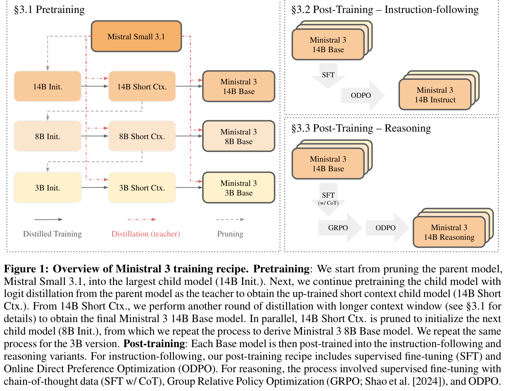
主要贡献可以概括如下：
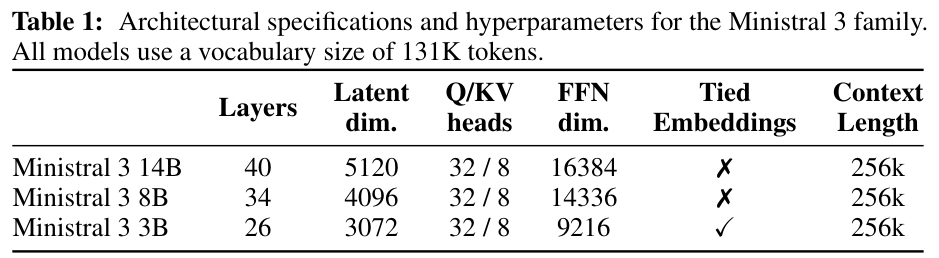
Ministral 3 家族基于仅解码器 transformer 架构 [Vaswani et al., 2017]。所有模型共享共同的架构基础，并按各自规模进行缩放。如表 1 所示，该家族包含 3B、8B 和 14B 三种参数规模，分别具有 26、34 和 40 层。（句子接下一页。）
（接上一页：各规模模型的层数已在上一页列出。）
其他架构选择包括具有 32 个 query head 和 8 个 key-value head 的分组查询 attention（Grouped Query Attention）[Ainslie et al., 2023]、RoPE [Su et al., 2021] 位置 embeddings、SwiGLU 激活 [Shazeer, 2020] 和 RMSNorm [Zhang and Sennrich, 2019]。对于长上下文扩展，我们使用 YaRN [Peng et al., 2023]，以及 attention 层中基于位置的 softmax 温度缩放 [Nakanishi, 2025, MetaAI, 2025]。3B 模型共享输入与输出 embeddings，以避免 embedding 参数在总参数量中占据主导。所有模型均使用含 131K token 的词表，并支持最长 256K token 的上下文。
视觉编码器。所有 Ministral 3 模型均使用参数量为 410M 的 ViT 作为图像理解的视觉编码器，该编码器复制自 Mistral Small 3.1 Base，保持冻结，采用 Pixtral [Agrawal et al., 2024] 中描述的相同架构。我们丢弃从 ViT 映射到语言模型空间的预训练投影层，并为每个模型训练一个新的投影层。
图 1 展示了 Ministral 3 模型的训练流程，其中包含预训练，以及随后两个不同的后训练阶段，分别产生指令微调和推理变体。
算法 1：级联蒸馏。
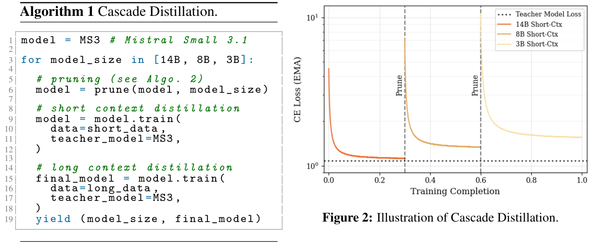
级联蒸馏。Ministral 3 模型的预训练从 Mistral Small 3.1 Base（MS3.1）模型开始。我们采用级联蒸馏，一种将 MS3.1 剪枝并蒸馏成更小后继模型的迭代方法。给定一个较大的预训练父模型，级联蒸馏是一种对目标规模逐步减小的子模型进行预训练的计算高效流程。如算法 1 所概括，它依赖于迭代的“剪枝—蒸馏—重复”方法：
各阶段的模型剪枝采用与 Minitron 和 Wanda [Sun et al., 2023, Sreenivas et al., 2024, Muralidharan et al., 2024] 相似的方法，所有变体的蒸馏教师均为 Mistral Small 3.1。剪枝和蒸馏的细节见后续段落。
与对每个小模型从头训练相比，级联蒸馏在 FLOPs 方面高效得多。还值得指出，端到端流程可以视为父模型结合权重剪枝进行持续预训练的一种形式。如图 2 所示，整个流程避免了数据重复，因为级联蒸馏在单次运行中遍历混合数据，并在途中进行剪枝。
剪枝。与 Minitron 类似，我们的剪枝策略旨在缩小模型规模的同时，保留原模型中最关键的组成部分（在验证数据集上衡量）。我们采用以下关键剪枝技术：
算法 2 提供了我们剪枝策略的更多细节：
算法 2：级联蒸馏的剪枝阶段。其输入为一个预训练模型，以及要剪枝到的目标规模配置。我们使用 input_x 和 output_x 表示大型校准 batch 的激活。
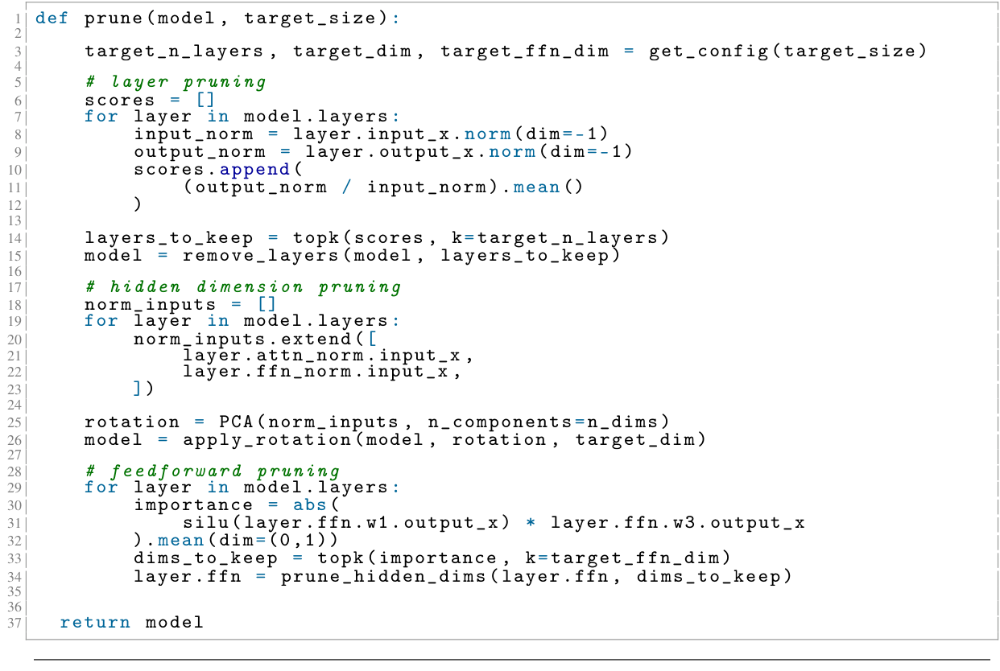
蒸馏。权重初始化后，每个子模型在纯文本数据及文本与图像交错数据的混合上训练，并从教师模型进行 logit 蒸馏。我们发现，仅使用前向 KL 蒸馏目标进行训练，优于调节分别赋予蒸馏目标和下一个 token 预测目标不同权重的目标函数系数。对于所有阶段和模型规模，我们都使用父模型作为教师模型（更多细节见 §5.1）。
预训练阶段由两个阶段组成：
(1) 短上下文阶段，上下文窗口长度为 16,384。该阶段的输出是下一个子模型剪枝阶段的输入。
(2) 长上下文阶段，使用 YaRN [Peng et al., 2023] 和基于位置的温度缩放 [Nakanishi, 2025, MetaAI, 2025]，将上下文窗口从 16,384 扩展至 262,144。
为赋予指令遵循能力 [Ouyang et al., 2022]，我们使用精心整理的数据集对预训练模型进行微调，该数据集由高质量多模态和纯文本指令遵循数据构成。微调阶段也包括两个阶段：监督微调（SFT）和在线直接偏好优化（Online Direct Preference Optimization，ODPO）。
我们使用 fp8 量化运行 SFT，采用来自强大教师的 logit 蒸馏损失。与预训练不同，每个模型均从 Mistral Medium 3 模型蒸馏（更多细节见 §5.1）。与预训练阶段类似，视觉编码器保持冻结，而适配器可以训练。
直接偏好优化（DPO）[Rafailov et al., 2023] 通过直接学习离线成对偏好，为人类偏好优化提供了一个轻量框架。对于 Ministral 3 模型，我们采用其在线变体——在线直接偏好优化（ODPO）[Guo et al., 2024]：针对每个样本，我们从当前策略以温度 \(T=0.7\) 采样两个候选回答，并使用基于文本的奖励模型对回答进行排序。
这一方法依赖成对奖励模型（Pairwise Reward Model，PWRM）动态排序候选回答。PWRM 通过结构化成对数据上的监督微调（SFT）进行训练：给定对话历史和两个候选回答，它预测哪个回答更受偏好。此外，我们引入 PWRM 的二项概率输出，改进经典 DPO 损失，以双侧损失取代硬性的胜者／败者标签，按每个回答被偏好的概率加权。我们还做了两项调整以稳定学习过程：(1) 调整 PWRM 温度以校准胜／负概率；(2) 使用 \(\beta\) 重缩放技术，使 DPO 损失的重缩放更加不依赖 \(\beta\)。
在实践中，在线变体对于缓解模型诱发的异常现象，例如无限生成，尤其重要。一些启发式规则也有助于此，例如自动将采样期间出现无限循环的任何回答视为“败者”，防止这种行为得到强化。最后，我们在生成期间启用工具执行，从而改善模型的工具使用表现。
总之，我们发现，相较于 SFT 和离线变体，在线偏好优化能显著改善与人类偏好的对齐。我们将这一阶段得到的模型作为 Ministral 3-14B/8B/3B Instruct 发布。
推理模型的后训练从预训练 checkpoint 开始，而非从 ODPO 变体开始。我们以长上下文预训练 checkpoint 为起点，通过由 SFT、GRPO 和 ODPO 组成的三阶段流程训练模型，使其具备推理时扩展能力。经过这一面向推理的微调阶段后发布的模型称为 Ministral 3 14B/8B/3B Reasoning。
在这一阶段，模型在短 CoT 和长 CoT 样本的混合上微调。前者来自我们的通用 SFT 混合数据，后者由添加了推理专用系统提示前缀的推理轨迹组成。
推理轨迹来自多种领域，包括数学、代码、通用对话、指令遵循、多语言任务、工具使用和视觉推理。我们进行轻量过滤，移除格式不佳、包含过多重复或存在不希望出现的语言切换的样本，确保模型接触到干净且结构清晰的 chain-of-thought。
3B 的 SFT：对于 3B 模型，普通 SFT 会产生一个不稳定、过于冗长的模型，输出中有大量重复和无限生成。为缓解这一问题，我们以 Magistral Small 1.2 为教师进行 logit 蒸馏。这有助于减少冗长程度，并稳定后续 RL 训练。
我们在 SFT checkpoint 之上进行 GRPO [DeepSeek-AI et al., 2025]，以完善模型的思考，并进一步提升推理任务表现。训练分为两个阶段：
STEM RL：第一阶段，我们在数学、代码和视觉推理任务上训练模型。我们从多种开放和专有来源收集问答对。通过严格的多步骤流程（详见 Rastogi et al. [2025]）对样本进行过滤和清理，移除无效、不完整和过于简单／困难的问题。
通用 RL：第二阶段，我们将范围扩展至 STEM 问题之外。我们为各种提示生成原子化评分标准，包括通用聊天、指令遵循和开放式推理任务。在 GRPO 期间，一个 LLM 评判器依据这些标准（例如忠实于提示、回答质量）评估模型的每个 rollout，最终奖励设为满足的启发式规则所占比例。这一阶段改善了模型的指令遵循和通用聊天能力，同时保持、有时甚至提升了 STEM 基准表现。
两个阶段都采用 Rastogi et al. [2025] 的 GRPO 训练方法。由于我们在 RL 期间观察到不可忽略的一部分生成被截断，因此将最大生成长度从 32K 增加到 80K。允许更长输出使模型能够完成最具挑战性问题的推理，带来了额外的性能提升。
最后，我们将 ODPO 作为 RL 后的对齐阶段，以更好地对齐用户偏好，完善模型的对话和指令行为。整体流程与非推理 instruct 模型所用设置相同，但有一项改动：在将模型生成发送给奖励模型评分之前，移除其中的思考片段。一些额外实验细节在第 5.3 节讨论。
在本节中，我们报告 Ministral 3 模型在多种基准上的结果。我们还将 Ministral 3 与相同规模的其他开放权重模型进行比较，即 Qwen 3 家族 [Yang et al., 2025, Bai et al., 2025] 和 Gemma 3 家族 [Kamath et al., 2025]。对于外部模型，为公平比较，我们使用自己的评估流程重新运行所有基准。
我们在以下基准上进行评估：通用：MMLU [Hendrycks et al., 2020]、MMLU-Redux [Perez et al., 2024]、ARC-Challenge [Clark et al., 2018]、RACE High [Lai et al., 2017]、TriviaQA [Joshi et al., 2017]、NaturalQS [Kwiatkowski et al., 2019] 和 AGIEval [Zhong et al., 2023]。数学与代码：MATH [Hendrycks et al., 2021]、GPQA Diamond [Rein et al., 2024] 和 MBPP [Austin et al., 2021]。多模态：MMMU [Yue et al., 2024] 和 MathVista [Lu et al., 2024]。后训练：Arena Hard [Li et al., 2024]、WildBench [Lin et al., 2024]、MM MTBench2、AIME 2024/2025、HMMT 2025、PhyBench [Liu et al., 2025] 和 LiveCodeBench [Jain et al., 2024]。
在表 2 中，我们将 Ministral 3 Base 模型与来自 Gemma 3 家族和 Qwen 3 家族、规模相近的其他开放权重模型进行比较。
在 14B 规模，Ministral 3 展现出强大性能，在 TriviaQA 和 MATH 上超过 Qwen 3 14B，同时在其他基准上具有竞争力。我们的 14B 模型在所有基准上也明显优于 Gemma 12B。在 8B 规模，我们观察到类似趋势。还值得指出，Ministral 3 8B 在大多数评估中超过规模更大的 Gemma 12B（TrivaiQA 除外），凸显了 Ministral 3 模型很高的参数效率。
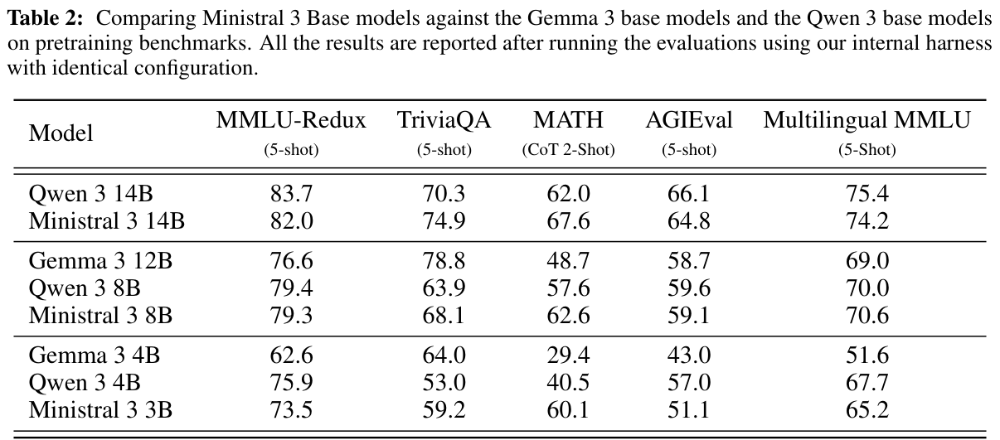
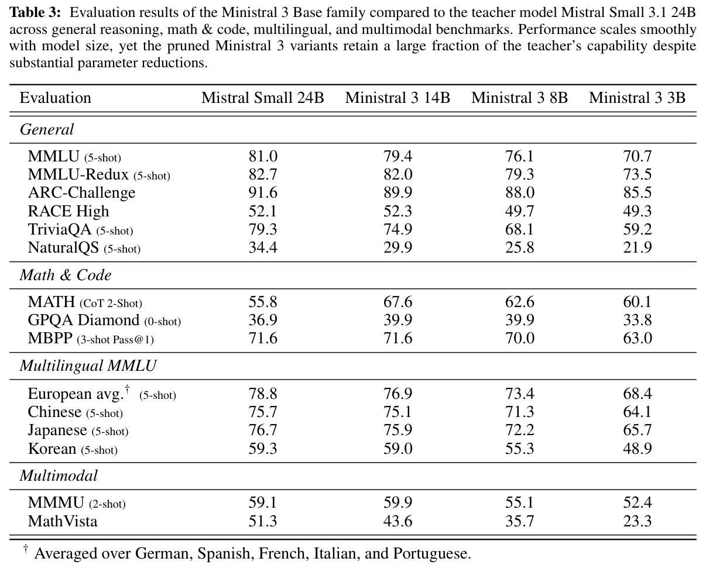
在 3B 规模，整体趋势仍然相同，但模型间的性能差距更加明显。表 3 提供了 Ministral 3 Base 模型以及教师模型的更多预训练评估结果。
在表 4 中，我们将 Ministral 3 Instruct 模型与来自 Gemma 3 家族和 Qwen 3 家族的 Instruct 模型进行比较。对于 Qwen 3，我们报告最新支持视觉的 instruct 变体（Qwen3-VL）的结果。
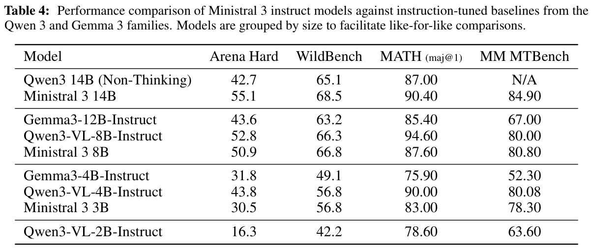
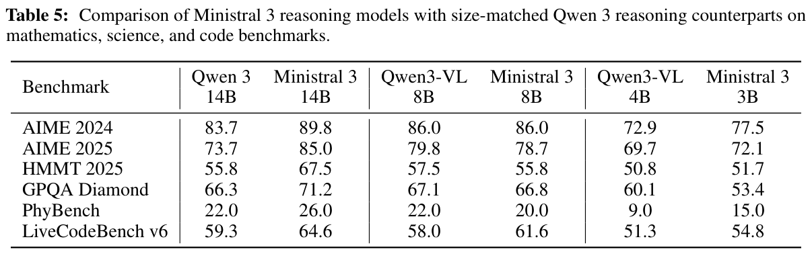
在表 5 中，我们将 Ministral 3 Reasoning 模型与 Qwen 3 家族的推理模型进行比较。为确保公平比较，所有模型都使用相同的评估流程。为降低方差，我们报告 pass@16，但 LiveCodeBench 使用 pass@5 评估。
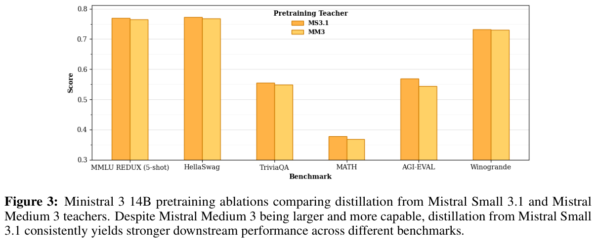
在为蒸馏流程选择合适的教师模型时，我们发现了几个值得关注的现象，它们显著影响了我们的设计选择：
更强的教师不会带来更好的结果：对于预训练，即便在未匹配 FLOPs 的设置下，从 Mistral Small 3.1 蒸馏也优于从强大得多的 Mistral Medium 33 蒸馏，这与 Busbridge et al. [2025] 的观察相似（图 3）。然而，在后训练期间，Ministral 3 模型会受益于从能力更强的 Mistral Medium 3.1 蒸馏。
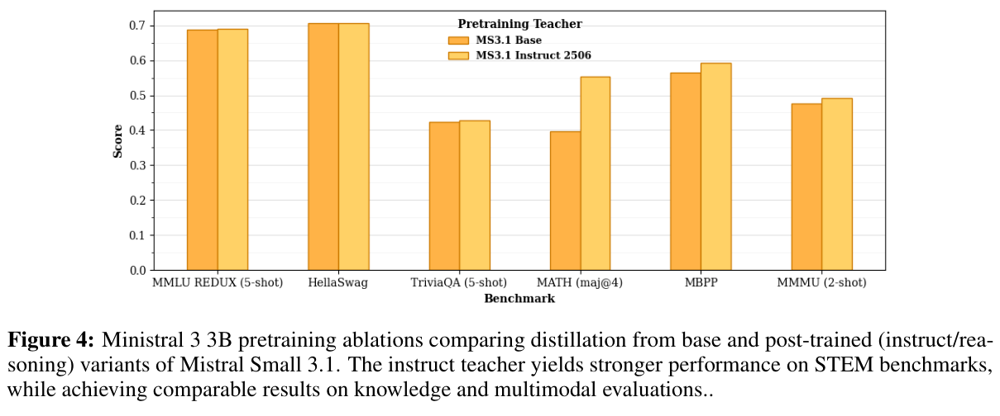
教师版本（base／instruct）的选择很重要：与 Goyal et al. [2025] 一致，我们发现，在预训练阶段从经过后训练的教师蒸馏，相较于从预训练教师蒸馏，会产生更强的模型（图 4）。特别是，这对数学（MATH）和代码能力有显著影响，对多模态评估（例如 MMMU）有较小但一致的影响，对知识指标（MMLU／Trivia-QA）的影响则可以忽略不计。
经过人类偏好调优的模型是更好的教师：我们使用 Mistral Medium 3 的两个内部版本来回答这个问题：在 SFT 期间，从 SFT checkpoint 蒸馏还是从经过偏好调优的 checkpoint 蒸馏更好？我们发现，从经过偏好调优的 checkpoint 蒸馏始终明显更好。即便学生模型经历了自身的偏好调优阶段，这些收益仍然存在。
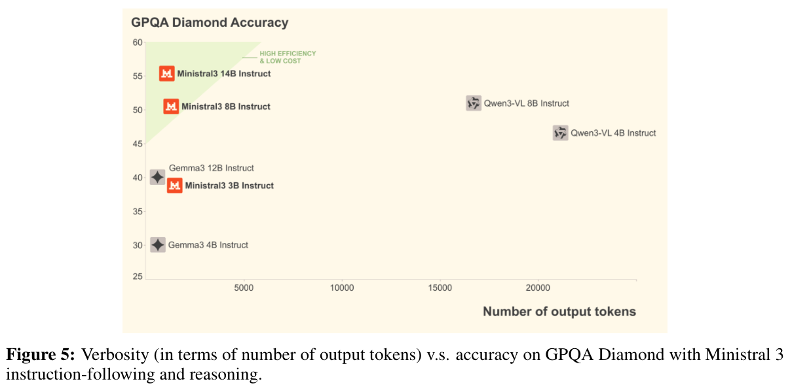
我们对 Ministral 3 Instruct 的后训练与 Qwen 3 不同：它不在“通用 RL”阶段之前进行“推理 RL”（见 Yang et al. [2025] 的图 1）。这很可能导致两个模型的冗长程度不同，如图 5 所示。
在一项试图让 Ministral 3 Instruct 模型产生更长 chain-of-thought 的实验中，我们研究了向 SFT 训练数据中加入不同比例的长 chain-of-thought（CoT）推理轨迹，并配以精心整理的系统提示。提高这类长 CoT 数据的比例改善了 STEM 基准表现；然而，这也会导致过度反思、内心独白和回溯行为（如下所示），对于通用聊天模型而言，这些行为是不希望出现且不自然的。
Instruct 模型中的推理行为
好，让我们尝试逐步解决这个问题。问题是：求所有满足 \(b > 9\) 且 \(17_{b}\) 是 \(97_{b}\) 的约数的整数进制 \(b\) 之和。首先，我需要回忆如何将 \(b\) 进制数字转换为十进制。\(b\) 进制中的一个数 \(d_{n}d_{n-1}\ldots d_{1}d_{0}\)，在十进制中等于 \(d_{n}b^{n}\)＋\(d_{n-1}b^{n-1}\)＋…＋\(d_{1}b\)＋\(d_{0}\)。
…
等等，问题说明 \(b > 9\)，因此我们需要检查 56 中大于 9 的约数（因为 \(b = d - 7\)
…
等等，让我们用另一种方式检查。我们可以不使用同余，而是建立方程 \(9b + 7 = k(b + 7)\)，其中 \(k\) 是某个整数且 \(k \ge 1\)
…
我认为就是这样。关键是将这些数转换为十进制，建立整除条件，并意识到进制必须大于 9，因此我们只考虑使 \(b > 9\) 的 56 的约数。
…
因此，有效进制为 21 和 49。这些进制之和为：
21 + 49 = 70
所以，答案是 70。
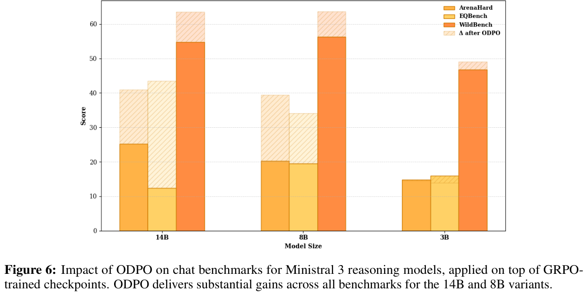
推理模型虽然更擅长解决有挑战性的问题，但往往在通用对话质量方面落后，我们在 Ministral 3 推理变体上也观察到了这一模式。为解决这个问题，我们在经过 RL 训练的 checkpoint 之上进行了 ODPO 训练。如图 6 所示，这显著改善了 14B 和 8B 模型在对齐基准上的表现。然而，3B 模型在这一阶段后未在公开基准上展现出显著提升4。尽管如此，该模型在我们内部的人工评估中表现更好，因此我们选择 ODPO checkpoint 作为发布候选。
4 我们还发现，在微调中，3B 基础模型比 14B 和 8B 对超参数选择更加敏感。
我们介绍了 Ministral 3，一个为资源受限环境设计的高效稠密语言模型家族。通过从较大的教师模型（Mistral Small 3.1 和 Medium 3）进行迭代蒸馏，我们构建了三种模型规模（14B、8B、3B），每种均提供基础、指令遵循和推理增强变体。所有模型都支持视觉能力，并能处理最长 256K token 的上下文。总体而言，Ministral 3 模型凸显了 Mistral 对支持和推进开源工作的持续承诺。我们希望它们能为社区提供价值，并为更强大、更有活力的开源生态系统作出贡献。
Alexander H. Liu, Kartik Khandelwal, Sandeep Subramanian, Victor Jouault
Abhinav Rastogi, Adrien Sadé, Alan Jeffares, Albert Jiang, Alexandre Cahill, Alexandre Gavaudan, Alexandre Sablayrolles, Amélie Héliou, Amos You, Andy Ehrenberg, Andy Lo, Anton Eliseev, Antonia Calvi, Avinash Sooriyarachchi, Baptiste Bout, Baptiste Rozière, Baudouin De Monicault, Clémence Lanfranchi, Corentin Barreau, Cyprien Courtot, Daniele Grattarola, Darius Dabert, Diego de las Casas, Elliot Chane-Sane, Faruk Ahmed, Gabrielle Berrada, Gaëtan Ecrepont, Gauthier Guinet, Georgii Novikov, Guillaume Kunsch, Guillaume Lample, Guillaume Martin, Gunshi Gupta, Jan Ludziejewski, Jason Rute, Joachim Studnia, Jonas Amar, Joséphine Delas, Josselin Somerville Roberts, Karmesh Yadav, Khyathi Chandu, Kush Jain, Laurence Aitchison, Laurent Fainsin, Léonard Blier, Lingxiao Zhao, Louis Martin, Lucile Saulnier, Luyu Gao, Maarten Buyl, Margaret Jennings, Marie Pellat, Mark Prins, Mathieu Poirée, Mathilde Guillaumin, Matthieu Dinot, Matthieu Futeral, Maxime Darrin, Maximilian Augustin, Mia Chiquier, Michel Schimpf, Nathan Grinsztajn, Neha Gupta, Nikhil Raghuraman, Olivier Bousquet, Olivier Duchenne, Patricia Wang, Patrick von Platen, Paul Jacob, Paul Wambergue, Paula Kurylowicz, Pavankumar Reddy Muddireddy, Philomène Chagniot, Pierre Stock, Pravesh Agrawal, Quentin Torroba, Romain Sauvestre, Roman Soletskyi, Rupert Menneer, Sagar Vaze, Samuel Barry, Sanchit Gandhi, Siddhant Waghjale, Siddharth Gandhi, Soham Ghosh, Srijan Mishra, Sumukh Aithal, Szymon Antoniak, Teven Le Scao, Théo Cachet, Theo Simon Sorg, Thibaut Lavril, Thiziri Nait Saada, Thomas Chabal, Thomas Foubert, Thomas Robert, Thomas Wang, Tim Lawson, Tom Bewley, Tom Bewley, Tom Edwards, Umar Jamil, Umberto Tomasini, Valeriia Nemychnikova, Van Phung, Vincent Maladière, Virgile Richard, Wassim Bouaziz, Wen-Ding Li, William Marshall, Xinghui Li, Xinyu Yang, Yassine El Ouahidi, Yihan Wang, Yunhao Tang, Zaccharie Ramzi
Pravesh Agrawal, Szymon Antoniak, Emma Bou Hanna, Baptiste Bout, Devendra Chaplot, Jessica Chudnovsky, Diogo Costa, Baudouin De Monicault, Saurabh Garg, Theophile Gervet, 等。 Pixtral 12B。 arXiv 预印本 arXiv:2410.07073, 2024.
Joshua Ainslie, James Lee-Thorp, Michiel de Jong, Yury Zemlyanskiy, Federico Lebrón, and Sumit Sanghai. GQA：从 multi-head checkpoint 训练广义多查询 transformer 模型。 arXiv 预印本 arXiv:2305.13245, 2023.
Jacob Austin, Augustus Odena, Maxwell Nye, Maarten Bosma, Henryk Michalewski, David Dohan, Ellen Jiang, Carrie Cai, Michael Terry, Quoc Le, 等。 使用大语言模型进行程序合成。 arXiv 预印本 arXiv:2108.07732, 2021.
Shuai Bai 等。 Qwen3-VL 技术报告, 2025. 链接 https://arxiv.org/abs/2511.21631.
Dan Busbridge, Amitis Shidani, Floris Weers, Jason Ramapuram, Etai Littwin, and Russ Webb. 蒸馏 scaling laws。 arXiv 预印本 arXiv:2502.08606, 2025.
Peter Clark, Isaac Cowhey, Oren Etzioni, Tushar Khot, Ashish Sabharwal, Carissa Schoenick, and Oyvind Tafjord. 认为你已经解决了问答问题？试试 ARC，即 AI2 推理挑战。 arXiv 预印本 arXiv:1803.05457, 2018.
DeepSeek-AI 等。 DeepSeek-R1：通过强化学习激发 LLM 的推理能力, 2025. 链接 https://arxiv.org/abs/2501.12948.
Abhimanyu Dubey, Abhinav Jauhri, Abhinav Pandey, Abhishek Kadian, Ahmad Al-Dahle, Aiesha Letman, Akhil Mathur, Alan Schelten, Amy Yang, Angela Fan, 等。 Llama 3 模型家族。 arXiv 电子预印本, 页 arXiv–2407, 2024.
Sachin Goyal, David Lopez-Paz, and Kartik Ahuja. 蒸馏预训练：从现代视角审视数据、上下文学习与 test-time scaling, 2025. 链接 https://arxiv.org/abs/2509.01649.
Shangmin Guo, Biao Zhang, Tianlin Liu, Tianqi Liu, Misha Khalman, Felipe Llinares, Alexandre Rame, Thomas Mesnard, Yao Zhao, Bilal Piot, Johan Ferret, and Mathieu Blondel. 通过在线 AI 反馈直接对齐语言模型, 2024. 链接 https://arxiv.org/abs/2402.04792.
Dan Hendrycks, Collin Burns, Steven Basart, Andy Zou, Mantas Mazeika, Dawn Song, and Jacob Steinhardt. 衡量大规模多任务语言理解。 arXiv 预印本 arXiv:2009.03300, 2020.
Dan Hendrycks, Collin Burns, Saurav Kadavath, Akul Arora, Steven Basart, Eric Tang, Dawn Song, and Jacob Steinhardt. 使用 MATH 数据集衡量数学问题求解能力。 arXiv 预印本 arXiv:2103.03874, 2021.
Naman Jain, King Han, Alex Gu, Wen-Ding Li, Fanjia Yan, Tianjun Zhang, Sida Wang, Armando Solar-Lezama, Koushik Sen, and Ion Stoica. LiveCodeBench：对代码大语言模型进行全面且无污染的评估。 arXiv 预印本 arXiv:2403.07974, 2024.
Mandar Joshi, Eunsol Choi, Daniel S Weld, and Luke Zettlemoyer. TriviaQA：一个用于阅读理解的大规模远程监督挑战数据集。 arXiv 预印本 arXiv:1705.03551, 2017.
Aishwarya Kamath, Johan Ferret, Shreya Pathak, 等。 Gemma 3 技术报告, 2025. 链接 https://arxiv.org/abs/2503.19786.
Tom Kwiatkowski, Jennimaria Palomaki, Olivia Redfield, Michael Collins, Ankur Parikh, Chris Alberti, Danielle Epstein, Illia Polosukhin, Jacob Devlin, Kenton Lee, 等。 Natural Questions：一个用于问答研究的基准。 《计算语言学协会会刊》, 7:453–466, 2019.
Guokun Lai, Qizhe Xie, Hanxiao Liu, Yiming Yang, and Eduard Hovy. RACE：一个源自考试的大规模阅读理解数据集。 载于 2017 年自然语言处理实证方法会议论文集, 页 785–794, 2017.
Tianle Li, Wei-Lin Chiang, Evan Frick, Lisa Dunlap, Tianhao Wu, Banghua Zhu, Joseph E Gonzalez, and Ion Stoica. 从众包数据到高质量基准：Arena-Hard 与 BenchBuilder 流程。 arXiv 预印本 arXiv:2406.11939, 2024.
Bill Yuchen Lin, Yuntian Deng, Khyathi Chandu, Faeze Brahman, Abhilasha Ravichander, Valentina Pyatkin, Nouha Dziri, Ronan Le Bras, and Yejin Choi. WildBench：使用真实用户的有挑战性任务评估 LLM。 arXiv 预印本 arXiv:2406.04770, 2024.
Zihan Liu, Zijian Wang, Yue Zhang, Jianing Wang, Jian Tang, Xiang He, and Xiangyu Zhang. PhyBench：全面评估大语言模型的物理感知和推理。 arXiv 预印本 arXiv:2504.16074, 2025.
Pan Lu, Hritik Bansal, Tony Xia, Jiacheng Liu, Chunyuan Li, Hannaneh Hajishirzi, Hao Cheng, Kai-Wei Chang, Michel Galley, and Jianfeng Gao. MathVista：评估基础模型在视觉上下文中的数学推理。 载于国际学习表征会议（ICLR）, 2024.
MetaAI. Llama 4 模型家族：原生多模态 AI 创新时代的开端。 https://ai.meta.com/blog/llama-4-multimodal-intelligence/, 2025.
Saurav Muralidharan, Sharath Turuvekere Sreenivas, Raviraj Joshi, Marcin Chochowski, Mostofa Patwary, Mohammad Shoeybi, Bryan Catanzaro, Jan Kautz, and Pavlo Molchanov. 通过剪枝和知识蒸馏构建紧凑语言模型。 arXiv 预印本 arXiv:2407.14679, 2024.
Ken M Nakanishi. Scalable-softmax 更适用于 attention。 arXiv 预印本 arXiv:2501.19399, 2025.
Long Ouyang, Jeffrey Wu, Xu Jiang, Diogo Almeida, Carroll Wainwright, Pamela Mishkin, Chong Zhang, Sandhini Agarwal, Katarina Slama, Alex Ray, 等。 通过人类反馈训练语言模型遵循指令。 《神经信息处理系统进展》, 35:27730– 27744, 2022.
Samuel J. Paech. EQ-Bench：一个用于大语言模型的情绪智力基准, 2023.
Bowen Peng, Jeffrey Quesnelle, Honglu Fan, and Enrico Shippole. YaRN：高效扩展大语言模型的上下文窗口。 arXiv 预印本 arXiv:2309.00071, 2023.
Aryo Perez, Tomasz Stanislawek, Andrzej Pohl, Kamil Dwojak, Dawid Jurkiewicz, Piotr Kobus, and Tomasz Trzciński. 我们已经完成 MMLU 了吗？ arXiv 预印本 arXiv:2406.04127, 2024.
Rafael Rafailov, Archit Sharma, Eric Mitchell, Stefano Ermon, Christopher D. Manning, and Chelsea Finn. 直接偏好优化：你的语言模型其实就是奖励模型。 arXiv 预印本 arXiv:2305.18290, 2023.
Abhinav Rastogi, Albert Q. Jiang, Andy Lo, Gabrielle Berrada, Guillaume Lample, 等。 Magistral。 arXiv 预印本 arXiv:2506.10910, 2025.
David Rein, Betty Li Hou, Asa Cooper Stickland, Jackson Petty, Richard Yuanzhe Pang, Julien Dirani, Julian Michael, and Samuel R Bowman. GPQA：一个研究生水平、无法依赖 Google 搜索解答的问答基准。 载于首届语言建模会议, 2024.
Keisuke Sakaguchi, Ronan Le Bras, Chandra Bhagavatula, and Yejin Choi. WinoGrande：大规模对抗性 Winograd Schema 挑战。 《ACM 通讯》, 64(9):99–106, 2021.
Zhihong Shao, Peiyi Wang, Qihao Zhu, Runxin Xu, Junxiao Song, Xiao Bi, Haowei Zhang, Mingchuan Zhang, Y. K. Li, Y. Wu, and Daya Guo. DeepSeekMath：推动开放语言模型的数学推理极限, 2024. 链接 https://arxiv.org/abs/2402.03300.
Noam Shazeer. GLU 变体改进 transformer。 arXiv 预印本 arXiv:2002.05202, 2020.
Sharath Turuvekere Sreenivas, Saurav Muralidharan, Raviraj Joshi, Marcin Chochowski, Ameya Sunil Mahabaleshwarkar, Gerald Shen, Jiaqi Zeng, Zijia Chen, Yoshi Suhara, Shizhe Diao, Chenhan Yu, Wei-Chun Chen, Hayley Ross, Oluwatobi Olabiyi, Ashwath Aithal, Oleksii Kuchaiev, Daniel Korzekwa, Pavlo Molchanov, Mostofa Patwary, Mohammad Shoeybi, Jan Kautz, and Bryan Catanzaro. LLM 剪枝与蒸馏实践：Minitron 方法。 arXiv 预印本 arXiv:2408.11796, 2024.
Jianlin Su, Yu Lu, Shengfeng Pan, Ahmed Murtadha, Bo Wen, and Yunfeng Liu. RoFormer：使用旋转位置 embedding 增强的 transformer。 arXiv 预印本 arXiv:2104.09864, 2021.
Mingjie Sun, Zhuang Liu, Anna Bair, and J Zico Kolter. 一种简单而有效的大语言模型剪枝方法。 arXiv 预印本 arXiv:2306.11695, 2023.
Ashish Vaswani, Noam Shazeer, Niki Parmar, Jakob Uszkoreit, Llion Jones, Aidan N Gomez, Łukasz Kaiser, and Illia Polosukhin. Attention 就足够了。 《神经信息处理系统进展》, 30, 2017.
An Yang 等。 Qwen3 技术报告, 2025. 链接 https://arxiv.org/abs/2505.09388.
Xiang Yue, Yuansheng Ni, Kai Zhang, Tianyu Zheng, Ruoqi Liu, Ge Zhang, Samuel Stevens, Dongfu Jiang, Weiming Ren, Yuxuan Sun, Cong Wei, Botao Yu, Ruibin Yuan, Renliang Sun, Ming Yin, Boyuan Zheng, Zhenzhu Yang, Yibo Liu, Wenhao Huang, Huan Sun, Yu Su, and Wenhu Chen. MMMU：一个面向专家级 AGI 的大规模多学科多模态理解与推理基准。 载于 CVPR 会议论文集, 2024.
Rowan Zellers, Ari Holtzman, Yonatan Bisk, Ali Farhadi, and Yejin Choi. HellaSwag：机器真的能补完你的句子吗？ arXiv 预印本 arXiv:1905.07830, 2019.
Biao Zhang and Rico Sennrich. 均方根层归一化。 《神经信息处理系统进展》, 32, 2019.
Wanjun Zhong, Ruixiang Cui, Yiduo Guo, Yaobo Liang, Shuai Lu, Yanlin Wang, Amin Saied, Weizhu Chen, and Nan Duan. AGIEval：一个以人为中心、用于评估基础模型的基准。 arXiv 预印本 arXiv:2304.06364, 2023.